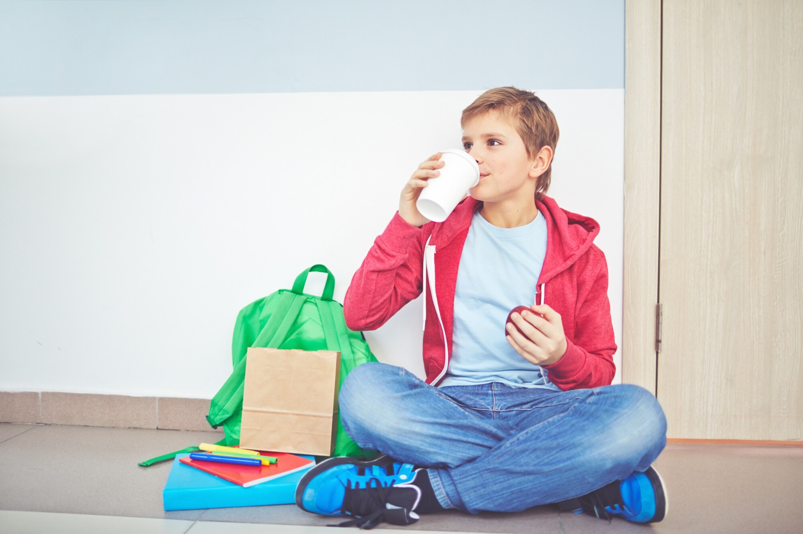

Школьникам и студентам
Полезные статьи:
Диабет в детском саду и в школе: как можно без проблем посещать детские учреждения?
Какие проблемы могут возникнуть при диабете 1-го типа в период полового созревания?
Диабет и школа: 10 советов для родителей
Студентам
Учёба в университете и диабет

Учеба в ВУЗе может стать устрашающей перспективой, если не сказать "вызовом" для диабетиков, в то время, как другие ждут не дождутся, чтобы покинуть отеческий кров.
Быть предусмотрительным, зараннее комплектовать набор аксессуаров для жизни вдали от дома, уведомление других людей о вашем диабете поможет предовтратить большинство негативных ситуаций, связанных с вашим диабетом.
Мы даем советы о том, на что вам нужно обратить внимание, чтобы ваш первый или новый год учебы в универститете прошел максимально благополучно. Итак, начинаем!
Начало всех начал
Перед тем, как собрать вещи при отъезде в университет, вам следует проконсультироваться с врачом, уж дополнительный совет вам точно не повредит. Вы не вчера родились и сможете отфильтровать полезную информацию, но выслушать ее стоит в любом случае.
Возьмите все аксессуары (инсулин, шприцы, шприц-ручку, глюкометр, набор тест-полосок). Более полный перечень вы знаете сами, это зависит от того, как вы компенсируете диабет, путем ли инъекционного инсулина, с помощью инсулиновой помпы или с использованием других сахароснижающих препаратов.
Обдумайте, где будет хранится инсулин, вероятно, что полезное пространство в холодильнике вам придется делить с другими студентами. Быть может стоит часть запасов хранить у друзей и знакомых, проживающих в том же городе, где вы учитесь. Во всяком случае никогда не подводила народная мудрость о том, что нельзя хранить все яйца в одной корзине.
Конечно, вы можете взять свой собственный холодильник для охлаждения инсулина на учебу в университет, и вероятно это будет неплохой альтернативой, особенно при жаркой погоде в летние месяцы.
Пусть окружающие люди знают о вашем диабете
Расскажите вашим близким знакомым, вашему куратору о диабете. Вообще неплохо, если вы сможете уделить каждому несколько минут, чтобы объяснить, какие опасности могут подстерегать диабетика и как на них правильно реагировать окружающим.
Расскажите своим соседям по квартире и близким друзьям о вашем заболевании. Если ваш инсулин будет лежать в общем холодильнике, то лучше, чтобы как можно больше людей, пользующихся этим холодильником знали о том, что инсулин должен быть расположен подальше от задней части холодильника, для предотвращения его замерзания.
Расскажите своим преподавателям о диабете в начале курса
У любого диабетика есть вероятность быть подверженным гипогликемии, и ваша реакция на это (употребление быстрых углеводов) сразу же после того, как вы зафиксировали гипогликемию должна быть правильно понята преподавателями. Особенно это актуально во время занятий.
Если вы выйдете из аудитории, чтобы съесть пару конфет или выпить сок, это должно быть правильно понято учителями. Поверьте, подавляющее большинство преподавателей с пониманием отнесутся к этой проблеме.
Вечеринки и прогулки
Если вы в гостях или направились на вечеринку, будьте уверены в том, что окружающие вас люди знают, что делать в случае наступления гипогликемии. Поверьте, есть расхожие заблуждения, что если диабетику стало плохо, то ему нужно уколоть инсулин. И в ваших же интересах рассказать вашим друзьям, как следует себя вести, если у вас случилась гипогликемия.
Регистрация в мед учреждении по новому месту проживания
Скорее всего вы пропишетесь в общежитии университета, поэтому посетите поликлинику, эндокринолога и поставьте его в известность о том, что у вас диабет и в ближайшие годы вы будете обращаться к эндокринологу по новому месту проживания. Скорее всего вам будет предложено пройти первичный медосмотр, но эта процедура проводится однократно. И это позволит вам получать инсулин по месту регистрации без потерь.
Найдите время для своего диабета

При смене обстановки, как правило степень контроля за компенсацией диабета ухудшается. Вы действительно можете обнаружить, что вам сложнее справляться с сахарным диабетом. Тем не менее это новый этап в вашей жизни, и вы должны более ответственно подходить к решению этого вопроса. В любом случае это ваша жизнь, а не ваших родителей или лечащего врача, потому, прежде всего, именно вы несете ответственность за то, что с вами происходит, особенно это касается состояния вашего здоровья.
Если вы ослабите контроль и ваш диабет постепенно будет приходить в состояние декомпенсации, то никому от этого легче не будет. Мнимая "свобода" от замеров крови на сахар, от инъекций на самом деле сильно ограничит ваши возможности, особенно в более зрелом возрасте, когда вы будете успешным и богатым, а состояние здоровья более не будет позволять в полной мере воспользоваться этими преимуществами. Поэтому перефразируя знаменитую пословицу можно сказать: "Береги здоровье смолоду".
Мы советуем вести дневник, где вы будете фиксировать результаты анализа сахара в крови, чтобы получать представление о том, в каком состоянии находится ваш самоконтроль. Это сослужит вам впоследствии хорошую службу.
Также раз в три месяца имеет смысл сдавать анализ на гликированный гемоглобин, это позволит получить интегрированный показатель вашей компенсации.
Уделяя слишком мало времени вашему диабету, в течение вашего длинного жизненного пути вы совсем не вовремя можете перестать чуствовать себя энергичным и готовым к новым свершениям, поэтому все в ваших руках. Распорядитесь мудро вашим временем и вашими возможностями.
Экзамены
Следует проверить заблаговременно до начала экзаменов то, каким образом вы сможете принести на экзамен глюкометр, тест-полоски, резервный запас сладкого на случай гипогликемии. Советуем вам проводить анализ крови на сахар до и после каждого экзамена. Влияние стресса для каждого индивидуально, поэтому трудно что либо предугадать, просто чаще измеряйте уровень глюкозы в крови.
Помните, что если у вас будет гипогликемия, за счет волнения это может пройти незаметно. Тем не менее это отразится на результатах экзамена. Будьте последовательны, внимательны и осторожны.
Если вы почуствуете в момент экзамена, что концентрация внимания начинает ослабевать, не стесняйтесь, проверьте уровень сахара в крови. Чтобы не шокировать экзаменатора, пообщайтесь с преподавателем, который будет присутствовать на экзамене и обсудите возможные варианты решения этой проблемы.
Как избежать увеличения веса
Считается, что много новичков, склонных к полноте имеют все шансы набрать лишний вес в первый год обучения. Исследование показало, что в среднем реальность такова, что изменение в режиме жизни и питания может быть довольно критичной, поэтому будьте внимательны и тщательно подходите к вашему рациону. Воздействие алкоголя и фастфуда в сочетании с периодами стресса и аномальным режимом сна и бодрствования являются одними из критических факторов, которые могут привести к увеличению веса.
Тратьте больше времени на приготовление здоровой пищи, будьте более требовательны к себе в соблюдении режима питания, сна, отдыха и самоконтроля. Покупайте еду, которая не содержит продуктов с высоким гликемическим индексом, и вам будет намного проще контролировать ваше питание.
Источник информации:
ДиаЧек